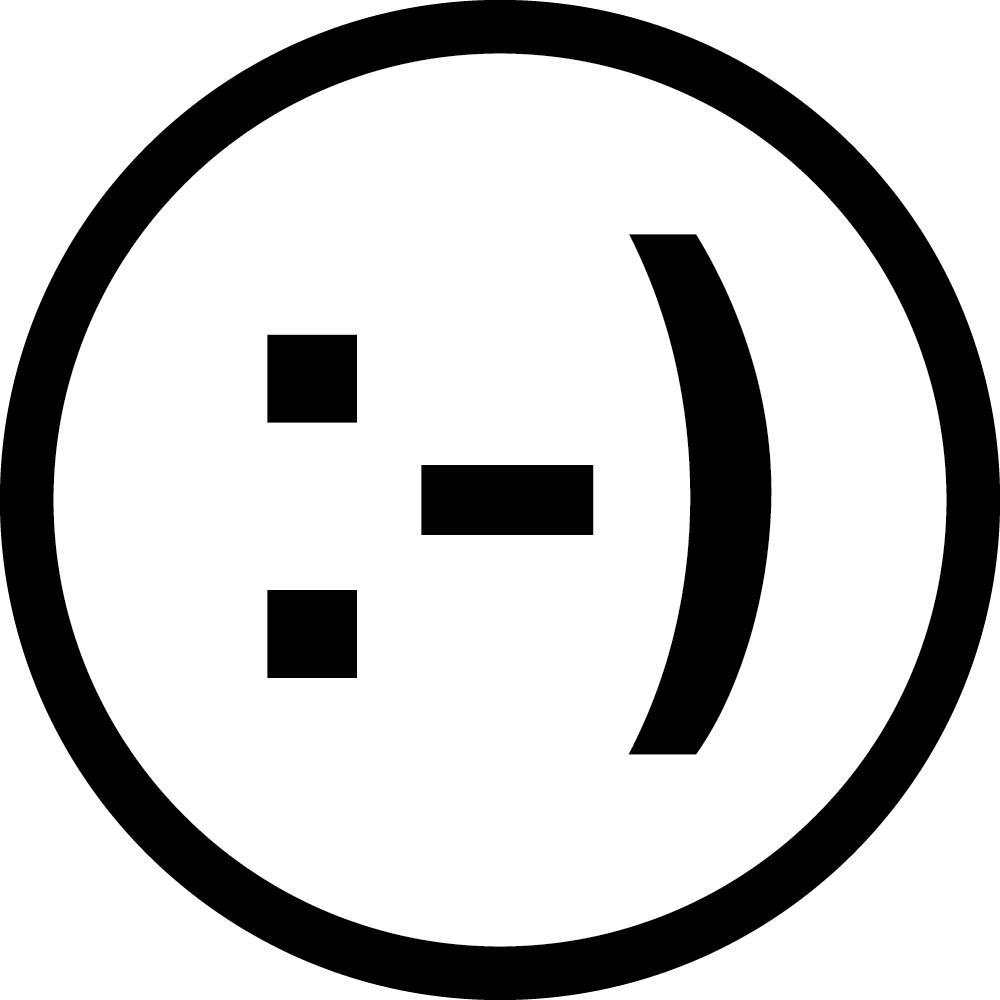
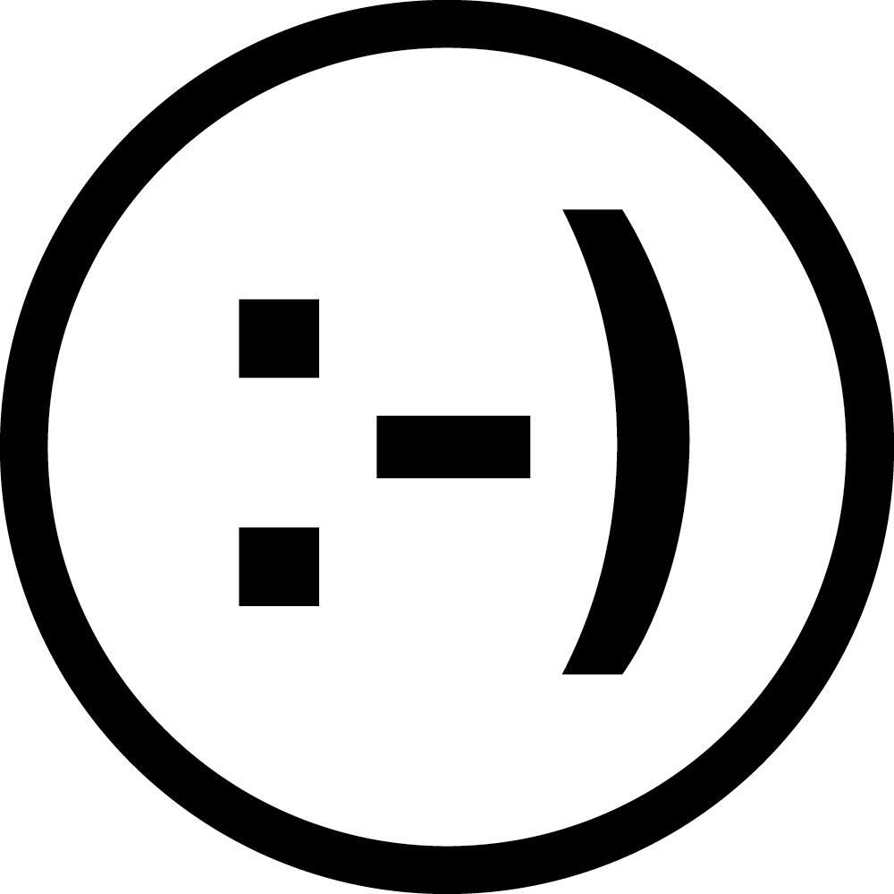

Portal, 2019.
Background
In East Asian cultures, it’s no shock to have family members and friends voice their opinions on the way you look and how you choose to present yourself. Some common phrases that ring familiar are, “Your face has gotten fatter recently.”, “You’d be prettier if your nose bridge was higher.”, “Wow, your eyes are so big!” There are very distinct beauty ideals that exist within the cultures. Having double eyelids, a high nose bridge, a smaller face, paler skin, are some of the few descriptions that make a person socially beautiful by society’s standard.
Problem
I want to bring awareness to the commentary on beauty ideals, specifically with family members. I don’t believe there is enough constructive critique in our everyday lives that on this topic, allowing us to question the reasons why we see desirability in this way. I wish to increase the levels of awareness in users that consume more “aggressive” beauty products to alter their looks (bleach, perms, plastic surgery, extreme dieting).
Design Opportunity
Creating an open dialogue surrounding beauty ideals in Asia for beauty product users of Asian descent. By creating awareness through conversation, and questioning the status quo of specific beauty trends, the user will have the complete agency to their choices and more power to their purchase.
Must
- Create an open dialogue between different Asian generations.
- Encourage healthy emotional communication.
- Challenge toxic Asian beauty ideals.
Keywords
#beautyideals #societalexpectations #toxichabits #relationships #practicingvulnerability